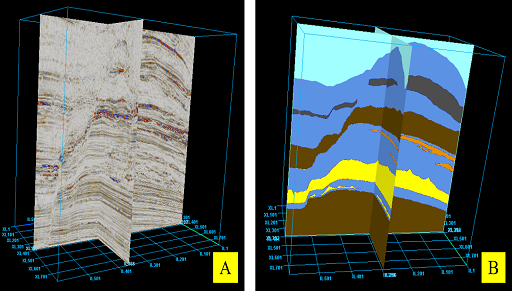
Vision and Intelligent Computing Lab
Department of Electrical Engineering (Program B)
Yuan Ze University
About the Lab
We are the Vision and Intelligent Computing (VIC) Lab, a research group within the Department of Electrical Engineering at Yuan Ze University. Our team is dedicated to advancing cutting-edge research in Computer Vision, Multimedia Processing, Artificial Intelligence (AI), and Intelligent Computing. We specialize in integrating image, video, and audio processing with innovative deep learning techniques to build intelligent and adaptive systems.
Our mission is to design efficient, robust, and scalable AI solutions that address real-world problems across diverse fields, including healthcare, geoscience, human-computer interaction, and autonomous systems. Through strong collaborations with academic partners, industry stakeholders, and international research communities, we aim to push the boundaries of intelligent computing and drive positive global impact.
🌿 We are also deeply committed to applying AI for green energy innovation, environmental sustainability, and climate resilience.
Lab News & Highlights
- 🎉 Aug 2025: VIC-Lab successfully hosted ICCE-TW 2025 and the IVCS Workshop at AVSS 2025. Thank you to all authors and organizers!
- 🌏 Jul 2025: Prof. Isack was appointed Visiting Professor at Kasetsart University Sriracha Campus, Thailand.
- 🎓 Jun 2025: Yayang Hafifah successfully completed the M.S. oral defense with astrong score—congratulations!
- 🗓️ May 2025: Big cheers! 🎊 Two of our papers were accepted to ICCE-TW 2025.
- 🌱 Apr 2025: TEEP & IIPP internship programs are now open—curious minds, apply now!
- 🤝 Mar 2025: We kicked off an AI collaboration with De La Salle University on a biosignal-sensing project for smart agriculture.
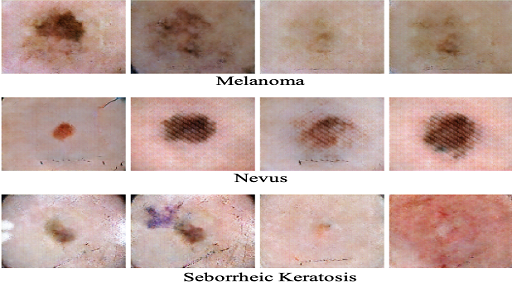
Skin Disease Generated Image, 2023
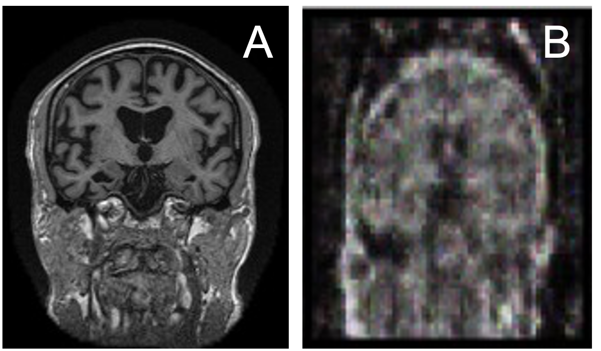
Alzheimer's Disease Analysis, 2024

Steel Defect Detection, 2022
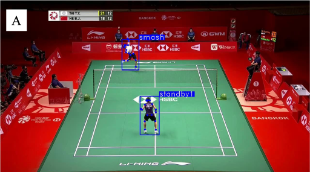
Sport Video Analysis, 2024
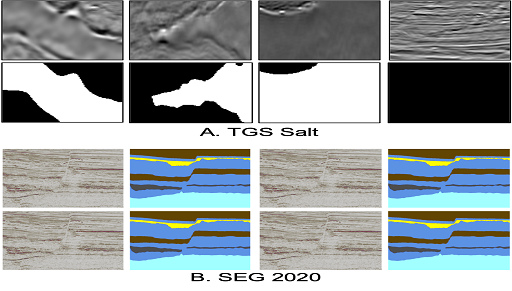
Salt and Seismic Layer Segmentation, 2024
Publications
Journals
- ConSeisDiff: A conditional diffusion approach to mitigate synthetic-real disparities in seismic fault detection - Isack Farady, Chia-Chen Kuo, Soufiene Sellami, Chih-Yang Lin. Journal of Applied Geophysics, 2025. [Read More]
- Pseudo Skin Image Generator (PSIG-Net): Ambiguity-free sample generation and outlier control for skin lesion classification - Isack Farady, Elvin Nur Furqon, Chia-Chen Kuo, Yih-Kuen Jan, Chih-Yang Lin. Biomedical Signal Processing and Control, 2024. [Read More]
- Enhancing the reliability of Alzheimer's disease prediction in MRI images - Junaidul Islam, et al. Computers in Biology and Medicine, 2025. [Read More]
- PreAugNet: Improve data augmentation for industrial defect classification with small-scale training data - Isack Farady, Chih-Yang Lin, Ming-Ching Chang. Journal of Intelligent Manufacturing, Springer, 2023. [Read More]
- Entropy-boosted Adversarial Patch for Concealing Pedestrians in YOLO Models - Chih-Yang Lin, Tun-Yu Huang, Hui-Fuang Ng, Wei-Yang Lin, Isack Farady. IEEE Access, 2024. [Read More]
- Diagnosis of Alzheimer’s Disease using Convolutional Neural Network with Select Slices by Landmark on Hippocampus in MRI Images - Yori Pusparani, Chih-Yang Lin, Yih-Kuen Jan, Fu-Yu Lin, Ben-Yi Liau, Peter Ardhianto, Isack Farady, et al. IEEE Access, 2023. [Read More]
- Hierarchical Image Transformation and Multi-Level Features for Anomaly Defect Detection - Isack Farady, Chia-Chen Kuo, Hui-Fuang Ng, Chih-Yang Lin. Sensors, 2023. [Read More]
Conferences
- A Real-Time Deep Learning Approach to Badminton Player Positioning and Movement Tracking - Isack Farady, Zhong-Han Lee, Chih-Yang Lin. 2025 IEEE International Conference on Advanced Visual and Signal-Based Systems (AVSS), 2025. [Read More]
- Real-time Identification of Badminton Hitting Actions Using Video and Human Key Point Heat Maps - Isack Farady, Chang-Yen Lo, Po-Chiang Lin, Chih-Yang Lin. 2025 IEEE International Conference on Consumer Electronics (ICCE), 2025, Las Vegas, USA. [Read More]
- Hybrid Denoising of B-Scan UWB Radar Data Using Higher-Order Statistics and Wavelet Shrinkage - Rahmad Sadli, et al. 2025 IEEE International Conference on Advanced Visual and Signal-Based Systems (AVSS), 2025. [Read More]
- Enhancing Adversarial Attacks with Vector Quantization - Isack Farady, Yi-En Chen, Chih-Yang Lin. International Symposium on Pervasive Systems, Algorithms and Networks, 2025, pp. 104–113. Springer Nature Singapore. [Read More]
- Effective Adversarial Sample Detection for Securing Automatic Speech Recognition - Chih-Yang Lin, Yan-Zhang Wang, Shou-Kuan Lin, Isack Farady, Yih-Kuen Jan, Wei-Yang Lin. IEEE International Conference on Advanced Video and Signal-Based Surveillance (AVSS), 2024, Ontario, Canada. [Read More]
- Integrating Stable Diffusion for Improved Alzheimer's Disease Classification: Insights from MRI Images and YOLOv8 - Junaidul Islam, Elvin Nur Furqon, Isack Farady, et al. International Conference on Consumer Electronics-Taiwan (ICCE-Taiwan), 2024. [Read More]
- Utilizing Brain Region Volume Estimations to Enhance Interpretability of Decision Trees for Alzheimer’s Disease Classification - Le Sang, Isack Farady, et al. International Conference on Consumer Electronics-Taiwan (ICCE-Taiwan), 2024. [Read More]
- Seismic Layer Segmentation Models with Channel Attention Block in Carbon Storage Study - Isack Farady, Chia-Chen Kuo, Sang Le, et al. Workshop on Advances in Environmental Sensing Systems for Smart Cities, 2024. [Read More]
- ECG Anomaly Detection with LSTM-Autoencoder for Heartbeat Analysis - Isack Farady, Vraj Patel, Chia-Chen Kuo, et al. International Conference on Consumer Electronics-Taiwan (ICCE-Taiwan), 2023. [Read More]
- Early Alzheimer’s Disease Detection Through YOLO-Based Detection of the Hippocampus Region in MRI Images - Junaidul Islam, Elvin Nur Furqon, Isack Farady, et al. Sixth International Symposium on Computer, Consumer and Control (IS3C), 2023. [Read More] (Best Paper Award)
- Implementing Multi-Level Features in a Student-Teacher Network for Anomaly Detection - Isack Farady, Bhagyashri Khimsuriya, Ruchita Sagathiya, et al. International Conference on Consumer Electronics-Taiwan (ICCE-Taiwan), 2023. [Read More]
- Automated Slice Selection and Labeling of Hippocampus Regions for Alzheimer’s Disease - Elvin Nur Furqon, Isack Farady, et al. International Conference on Consumer Electronics-Taiwan (ICCE-Taiwan), 2023. [Read More] (Best Paper Award)
- Evaluation of Additional Augmented Images for Steel Surface Defect Detection - Isack Farady, Megha Dey Sarkar, Wen-Thong Chang, et al. IEEE International Conference on Consumer Electronics-Taiwan (ICCE-TW), 2022. [Read More]
- Exploring the Use of Different Feature Levels of CNN for Anomaly Detection - Isack Farady, Lakshay Bansal, Somchoke Ruengittinun, et al. 26th International Computer Science and Engineering Conference (ICSEC), 2022. [Read More] (Best Paper Award)
- Evaluation of Data Augmentation on Surface Defect Detection - Isack Farady, Chih-Yang Lin, Fityanul Akhyar, et al. IEEE International Conference on Consumer Electronics-Taiwan (ICCE-TW), 2021. [Read More]
- Mask Classification and Head Temperature Detection Combined with Deep Learning Networks - Isack Farady, Chih-Yang Lin, Amornthep Rojanasarit, et al. 2nd International Conference on Broadband Communications, Wireless Sensors, and Powering (BCWSP), 2020. [Read More] (Best Paper Award)
Our Team
Isack Farady, Ph.D.
Lab Director
Graduate Students
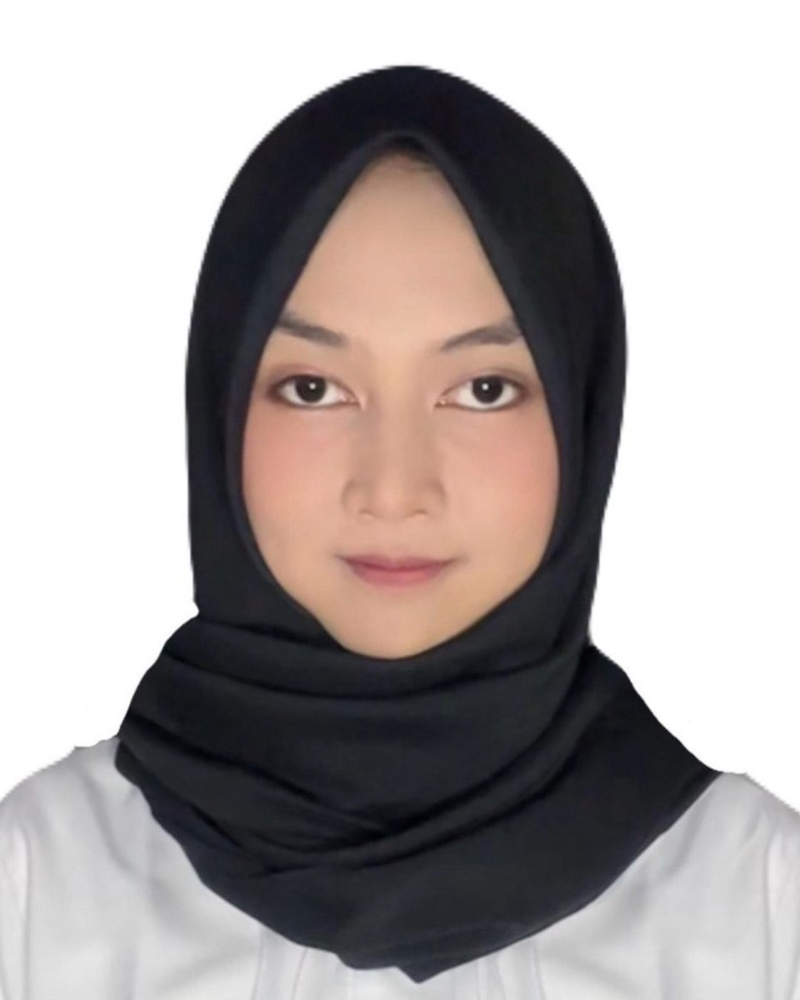
Novia Brilianty
Andri Marcherisal
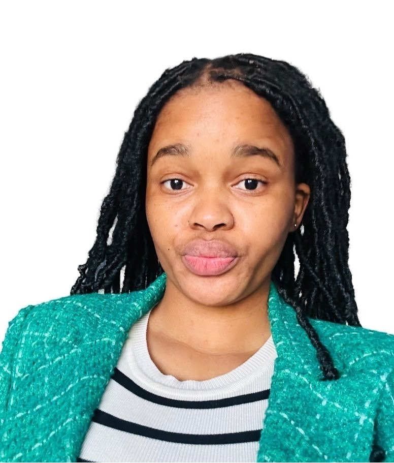
Sakhile Ginindza
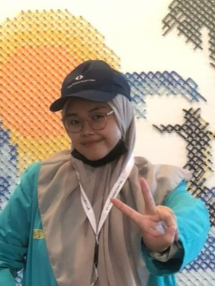
Huda Aisyah K.
Undergraduate Students
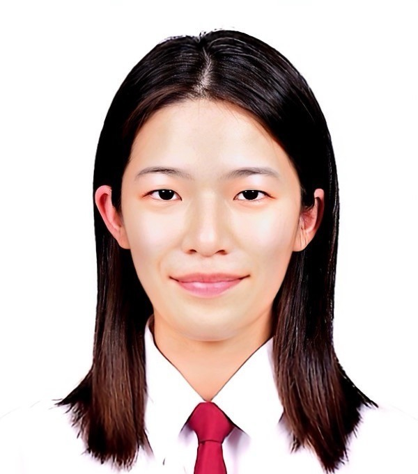
Yu-Ti Tu
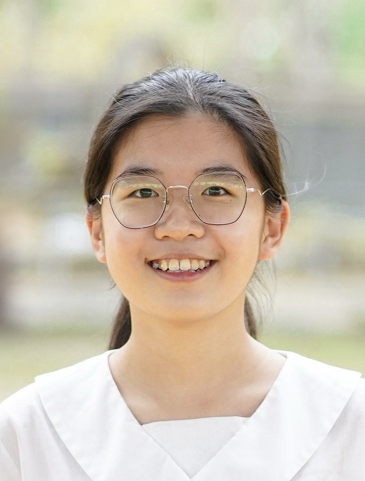
Yi-Ting Chiang
S. Udhayaraj
Lab Alumni
Chun-Yi Lin
B.S. in Electrical Engineering, 2024
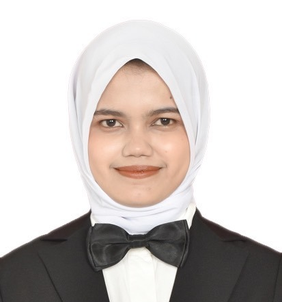
Yayang Hafifah
M.S. in Electrical Engineering, 2024
Contact Us
We welcome research collaborations with both academia and industry, as well as various internship opportunities, including TEEP, IIPP, and individual internships. If you are interested in joining us, please check our website news for the latest updates and feel free to contact us.
📧 Email: vicianteams@gmail.com
📍 Location: Building 7, Room 70935, Department of Electrical Engineering, Yuan Ze University, Taiwan
🔗 GitHub: vicyzu
VIC-Lab Activities & Collaborations
Snapshots of our lab's research engagements, academic collaborations, field activities, and international conference participation.

Paper Presentation at IVCS2025
{kind=link}
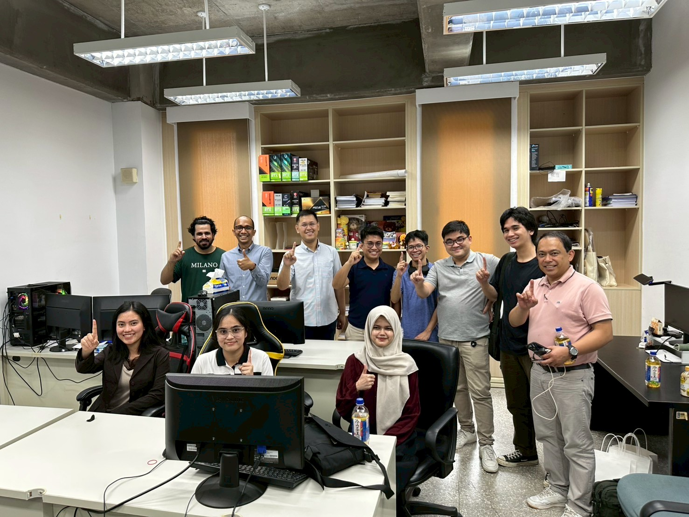
Lab Visit by De La Salle University Delegation
{kind=link}
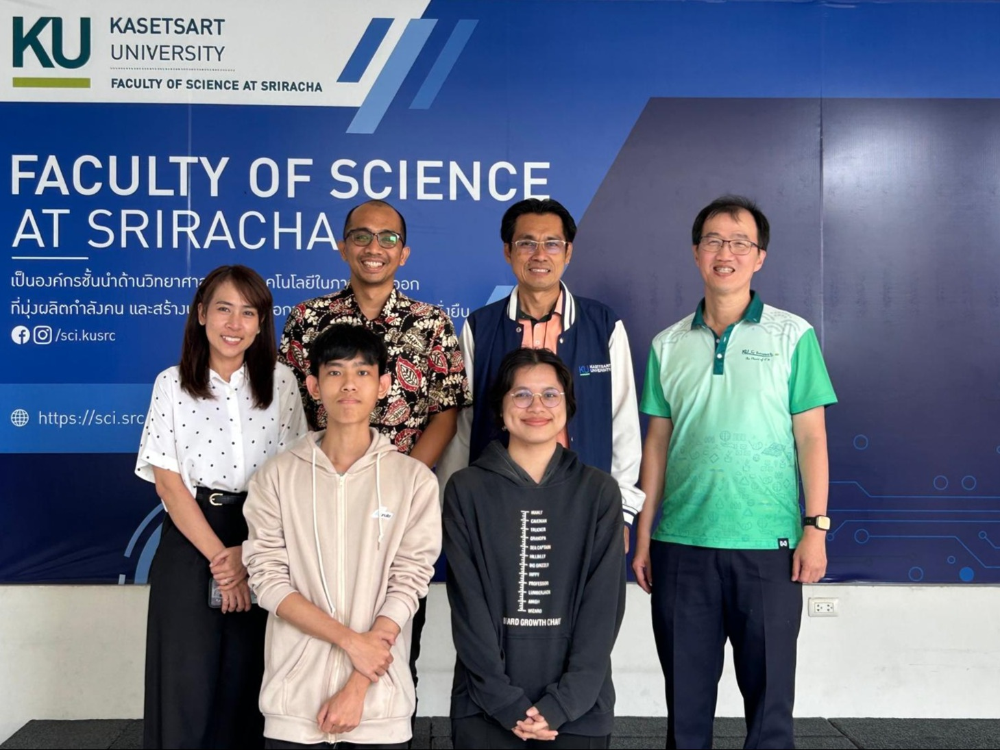
Visiting Professor Program at KU-Thailand
{kind=link}
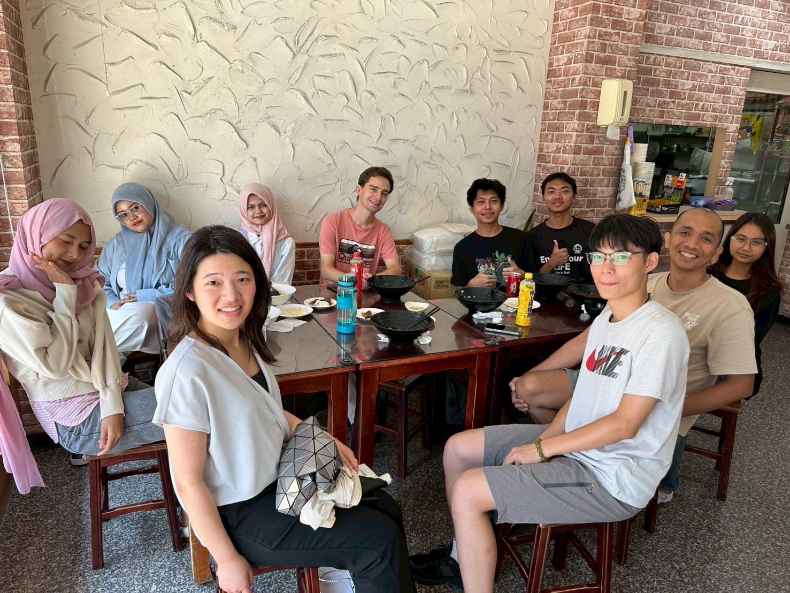
Group Photo with Students and Interns

The IVCS2025 Workshop was successfully held!
{kind=link}
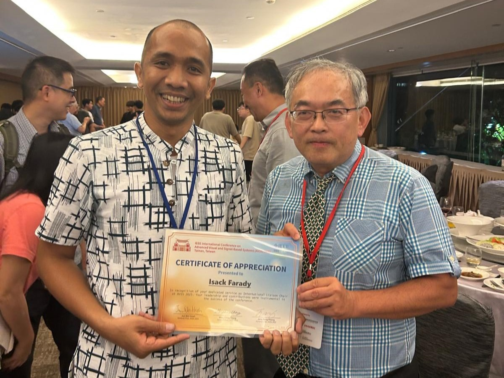
Chairs Contribution Award
{kind=link}
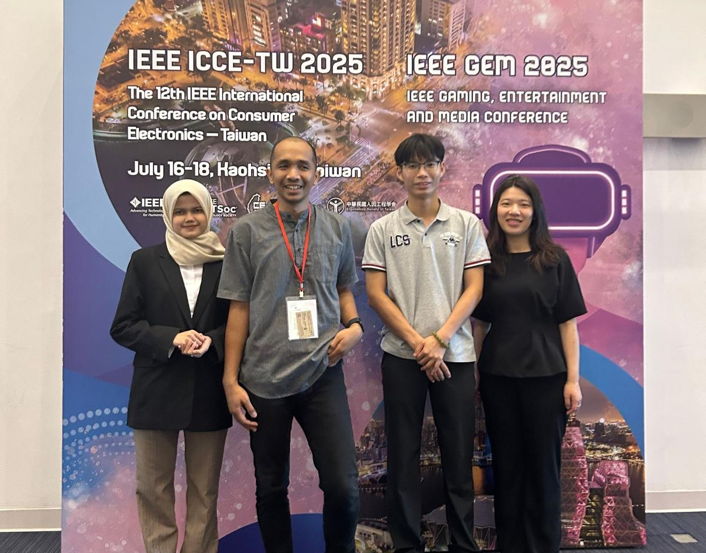
VIC Lab members joined ICCE-TW 2025

Happy Graduation!
{kind=link}
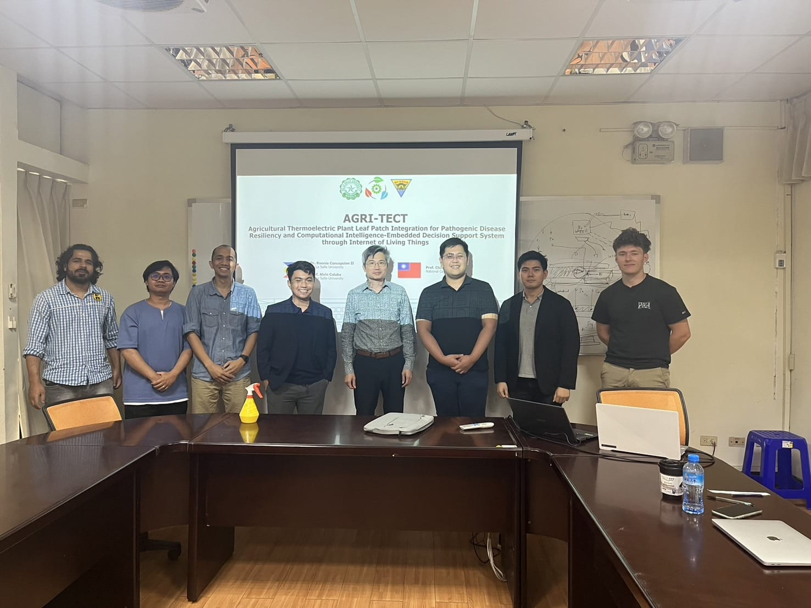
Kick-off Meeting for Joint Project with Philippines
{kind=link}
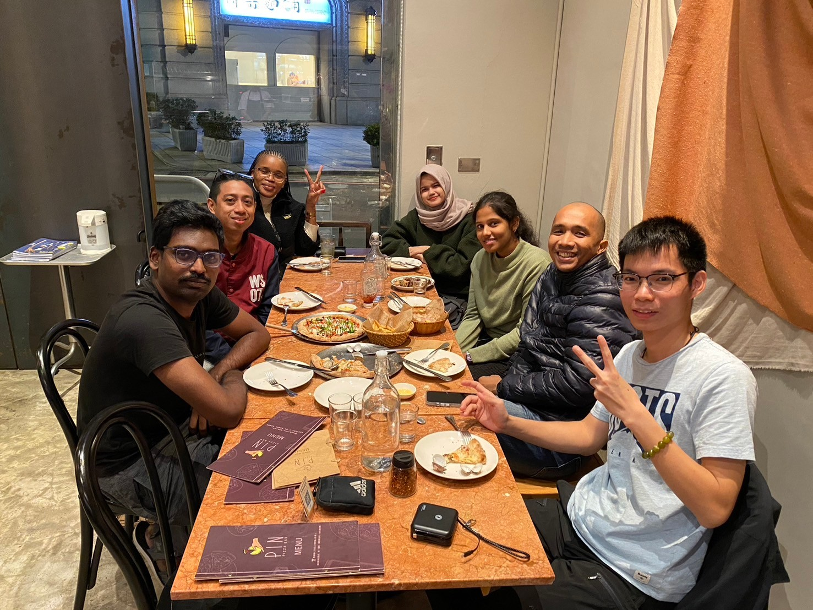
Group Photo with Students and Interns
{kind=link}
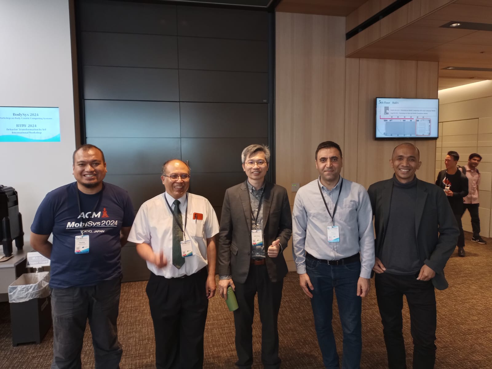
Attending ACM Conference in Tokyo
{kind=link}
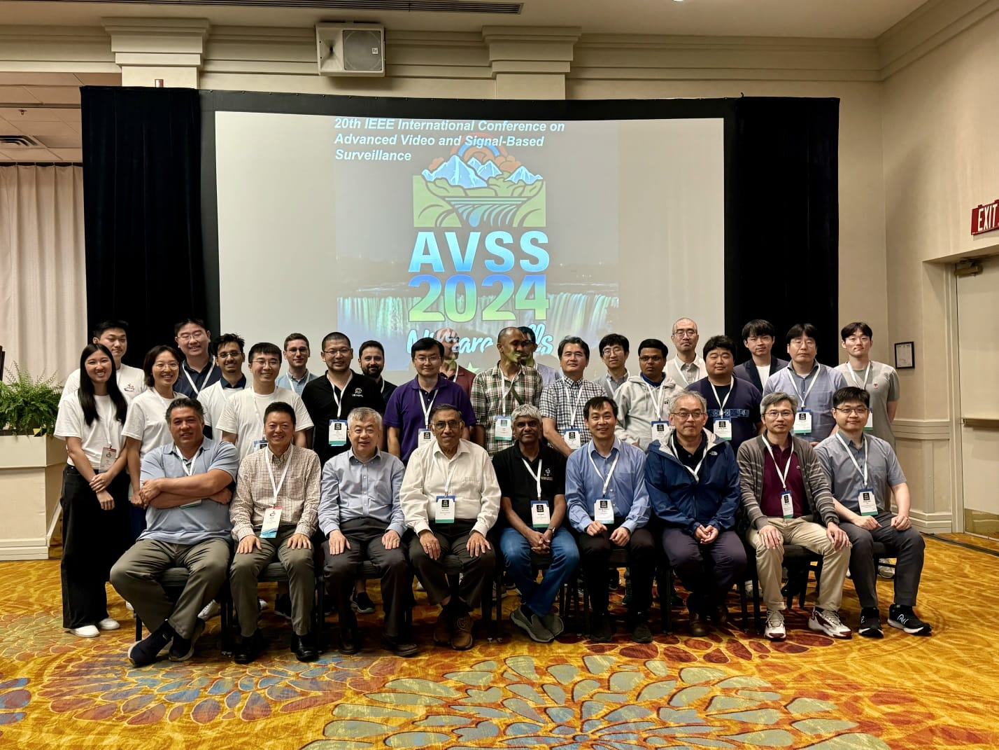